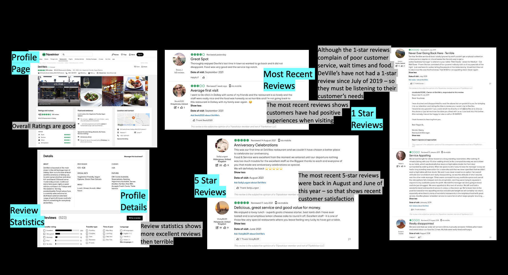
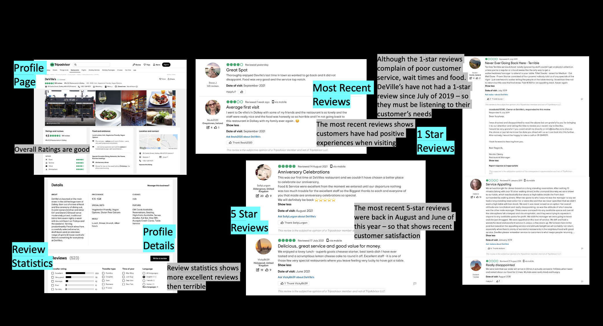
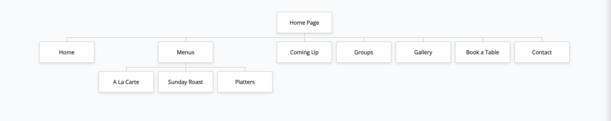
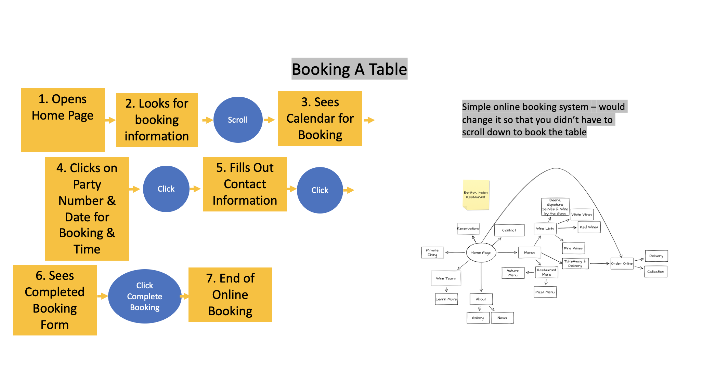
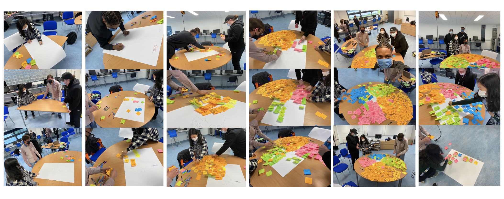
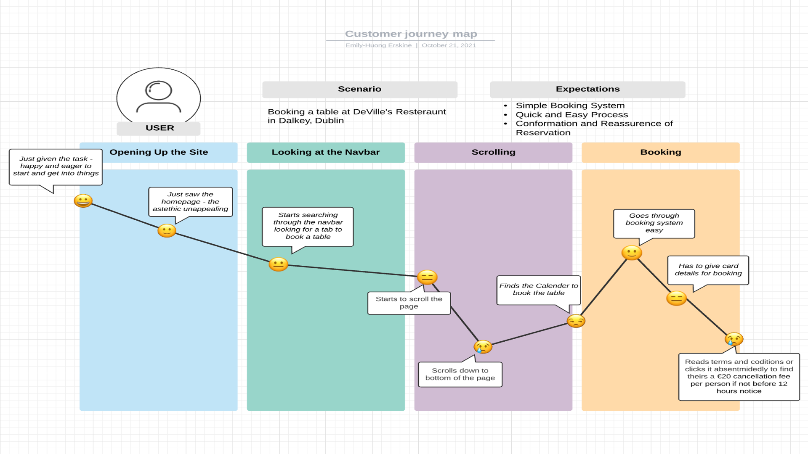
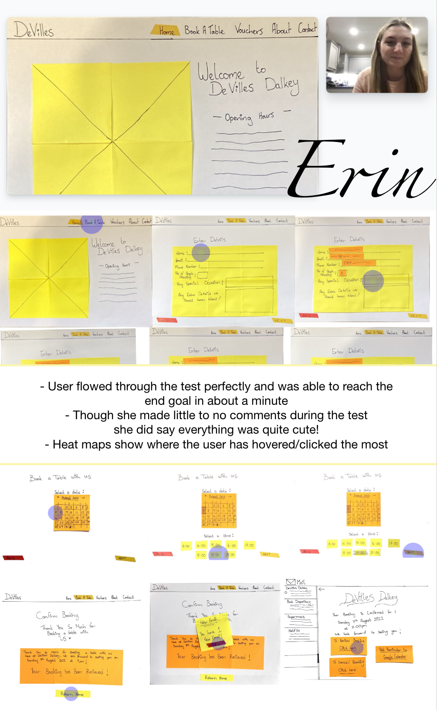
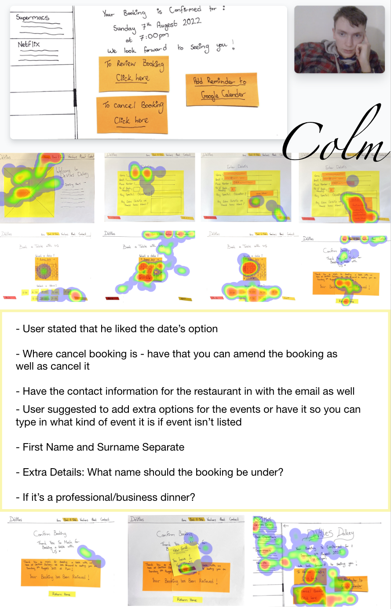
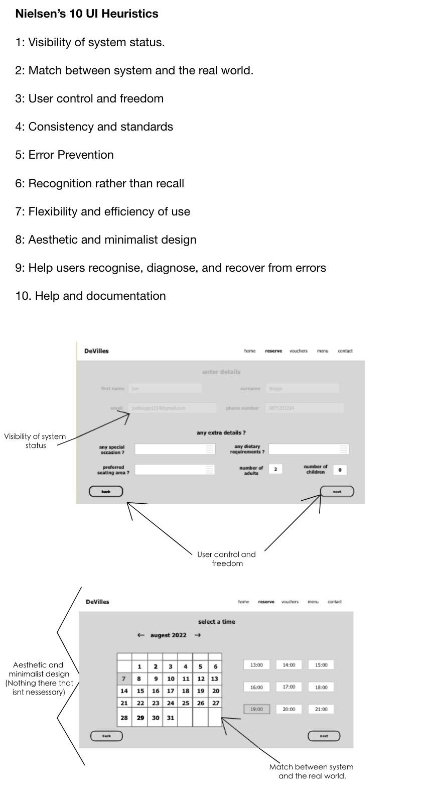
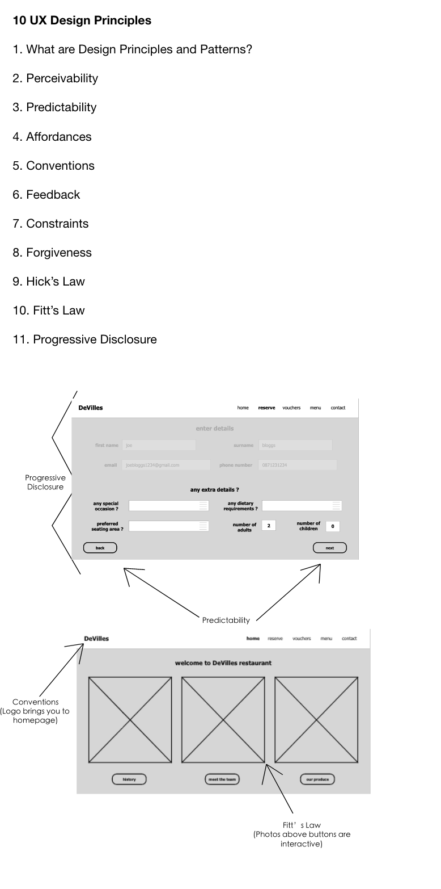

DeVilles Resteraunt
resdesigning a website
project briefbackground: DeVille's is a restaurant in the affluent village of Dalkey, Co. Dublin, home to many of Ireland’s multi-millionaires. the client company is looking for a website re-design that will properly reflect their passion client goals:
|
target audience:
to create a functional website prototype that is interactive, clear and delightful to use which should:
|
suggested site structure:
|
design phase: empathy & define (part 1/3)
platform: web
activities: research into client company and competitors through desk reseach and usability testing - empathy mapping and customer journey maps
use case: the client company is looking for a website re-design that will properly refelect this passion
 

|
secondary researchfamiliarise yourself with DeVille's and locate reviews of the sites' on-line user experience. briefly bullet point your own review of the client's site. this will inform the next step in the process.
|
site mapsketch/use digital media to illustrate the DeVille's home page site-map and branch links for the following task: information about the menu including allergy information. |
 |
|  |
user flowsketch/use digital media to illustrate the DeVille's website's user flow based on the option below: information about the restaurant including some history and menu highlights |
empathy mapthe empathy-mapping process helps distil and categorise your knowledge of the user into one place. It can be used to capture who a user is. it makes sense of qualitative research (research notes, user-interviews). |
 |
|  |
customer journey mapuser goals and pain points, determined through the research, were translated into an easy read and graphically structured document to assist future product design. helps show the user's route through the site - navigating through the particular task. pain points
|
design phase: ideate, prototype & test (part 2/3)
platform: web
activities: using the research accumulated during part one, make a low fidelity prototype and though usability tests and iterations create a mid fidelity prototype
use case: the client company is looking for a website re-design that will properly refelect this passion
ideal customer journey mapto get the ideal customer journey - we take what the user wants to experience when booking a table at a restaurants website and implement that into a customer journey map that always leaves the user satisfied. |

|

|
storyboardthe storyboard is used to give a visual look into the user's experience - the goal is to tell the story of a user's journey through drawings/images. |
lo-fi prototypesketched screens and states were photographed and inserted into Marvel app for usability testing purposes. Research participant feedback was noted. |

|
lo-fi usability tests/notestwo research participants were interviewed, observed and recorded as they navigated through the low fidelity prototype. qualitative research notes were transcribed, heat map data was retrieved and shown below. noted research participant feedback was incorporated into further product development. the low fidelity prototype was consequently updated and tested again. |
 |  |
|
|
mid-fi prototypefollowing low fidelity product development, screens and screen states were then created using adobe xd and tested by research participants via the programs usability testing feature. research participant feedback was further incorporated into product development. the mid fidelity prototype was consequently cyclically iterated, tested and updated. |
|  |  |
design phase: handover (part 3/3)
platform: web
activities: using the research accumulated during parts one and two, turn your mid-fidelity prototype through usability tests and iterations into a fully functioning hi-fidelity prototype
use case: the client company is looking for a website re-design that will properly refelect this passion

|

|

high fidelity prototype
following mid fidelity product development, adobe xd documents were precisely converted to a different document and with carful colour choices following the theme and atmosphere i wanted to create - i made my high fidelity prototype.
further usability tests were conducted on the the consequent high fidelity prototype. research participant feedback was noted and incorporated into further product development.
click here to test out the prototype!